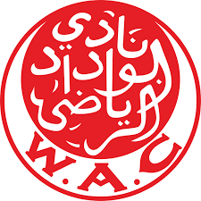
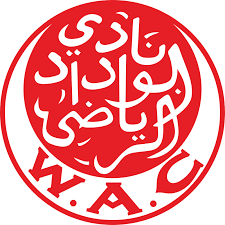
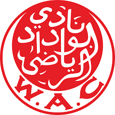
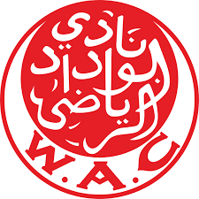

Le Wydad Athletic Club appele aussi Wydad AC ou WAC est un club marocain de football fondele 19 juin 1939 a Casablanca. C'est la section football du club omnisport homonyme creee en 1937. Le WAC est un des trois clubs du championnat marocain n'ayant jamais connu la relegation. Le club a remporte 22 titres nationaux, 9 Coupes du Trone et 7 Supercoupe du Maroc, devenant le club le plus titre au Maroc. Dans les competitions africaines, le WAC remporte trois Ligue des champions de la CAF, une Coupe des vainqueurs de coupe et une Supercoupe. Le club dont les couleurs sont le rouge et le blanc entretient une rivalite avec le Raja CA, cette confrontation est connue sous le nom de Derby de Casablanca. Le WAC a aussi une section de football feminin depuis 2002, ainsi qu'une section de futsal et une section de beach soccer creees en 2022.
Histoire :C'est dans un contexte difficile en Empire chérifien, marqué par protectorat français, que le WAC voit le jour. Durant cette époque, le port de Casablanca est entouré de plusieurs piscines et pour y accéder il faut être membre d'un club mais les clubs sont tous dirigés par des protecteurs français. À partir de la saison 1935/1936, plusieurs Marocains musulmans peuvent profiter des piscines de la ville en s'inscrivant dans ces clubs. Mais le nombre de marocains augmente rapidement, ce qui inquiète les autorités françaises qui les renvoient. Après ces événements est venue l'idée de créer un club entièrement marocain. Après plusieurs demandes aux autorités françaises pour la création du club, qui restent chaque fois sans réponse, les Benjellouns, futurs présidents du WAC, décident de contacter la Ligue du Maroc de Football Association, Mohammed V intervient personnellement pour autoriser la création du WAC. Le Wydad Athletic Club est créé le 8 mai 1937. L'origine du nom Wydad : lors de la première réunion du comité du club, l'un des membres fondateurs (Mohammed Massis) arrive en retard car il regardait le dernier film de la grande artiste égyptienne, Planète d'Est intitulé : Wydad, au même temps ils entendus une "Zaghrouda" vienne d'une maison proche, et de ce fut le président fondateur a dit : On va faire la sagesse du prophète si y a que cette zaghrouda, et il a expliqué qu'est ce que signifie le mot "Wydad" ("Amour" en français) aux membres et ils étais tous intéressés par ce joli nom, et c'est ainsi que le premier club de l'histoire au monde est appelé Wydad (الوداد)5. La première section du club est celle de water-polo, puis après une proposition du président-fondateur, Mohamed Benjelloun Touimi, il est décidé de créer plusieurs autres sections, dont celle de basket-ball en 1938 et la section de football qui s'est créée le 19 juin 1939.